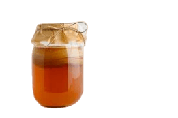
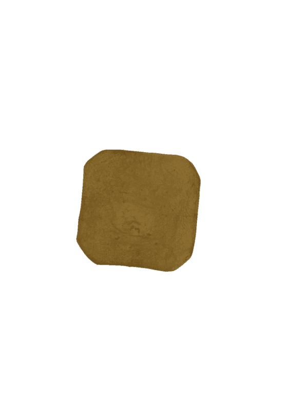

Le scoby déshydraté, abréviation de "Symbiotic Culture Of Bacteria and Yeast", est essentiel pour la fabrication du kombucha. C'est en réalité une communauté de micro-organismes, comprenant des bactéries et des levures, qui travaillent ensemble pour fermenter le thé sucré. Lorsqu'il est déshydraté, le scoby devient un cuire utilisable mais hydrophobe.En utilisant le starter(un milieu de culture), on aide vie à cette communauté microbiotique, créant ainsi un environnement convenable à la fermentation,et permettant ainsi la formation du cuire de komboucha .
Les étapes de fermentation :
1-Développer un liquide plein des nutriments
1● Faire bouiller l'eau
2● Laisser le thé infuser pour 15min.
3● Diluer le sucre.
4● Laisser le mélange refroidir (une temperature entre 25°C et 30°C)
2-Former un liquide de cuture

1● Mélanger le le liquide de culture et le starter dans un recipient(verre ou plastique)
2● Ajouter le komboucha ou le scobey(facultatif en présence du starter)
3● couvrir le récipient avec une coverture poreuse qui permet le passage de l'air
3-Fermentation de Komboucha
1● Poser le scobey dans un milieu sans lumiére, humidité et d'une tempurature entre 25°C et 30°C
2● Laisser le scobey dans cettee état sans le déplacer poue une durée entre 4 et 6 semaines pour que la couche se développe.
3● Quand la couche arrive à une épaisseur de 0.8cm on passe à le séchage
4-Séchage de komboucha

1● Retirer le couche doucement et laver la avec de l'eau
2● Placer la couche sur une plaque de bois
3● Laisser le dans l'abri de de soliel pendant le jour
4● Aprés environ 7jours retirer le de plaque e voici votre cuire de komboucha
La culture in vivo
C'est quoi la culture in vivo
La culture in vivo des plantes se réfère à la croissance et au développement de plantes à l'intérieur d'un organisme vivant,dans des conditions naturelles. Cela inclut la germination de graines, la croissance de plantules,et la production de fruits et de graines à l'intérieur de l'organisme. Cette méthode permet d'étudier les interactions complexes entre les plantes et leur environnement, en fournissant des informations précieuses sur le cycle de vie, et le développement des plantes dans des conditions biologiques réelles.
La culture in vitro
C'est qoui la culture in vitro
la culture in vitro est utilisée pour explorer des mécanismes cellulaires et des interactions moléculaires, offrant ainsi des insights précieux dans la recherche biomédicale. Dans le domaine agricole, elle facilite la création de plantes résistantes aux maladies et aux conditions environnementales difficiles. Cependant, le succès de cette technique repose sur une gestion attentive des paramètres de culture, soulignant l'importance d'une expertise technique dans son application.